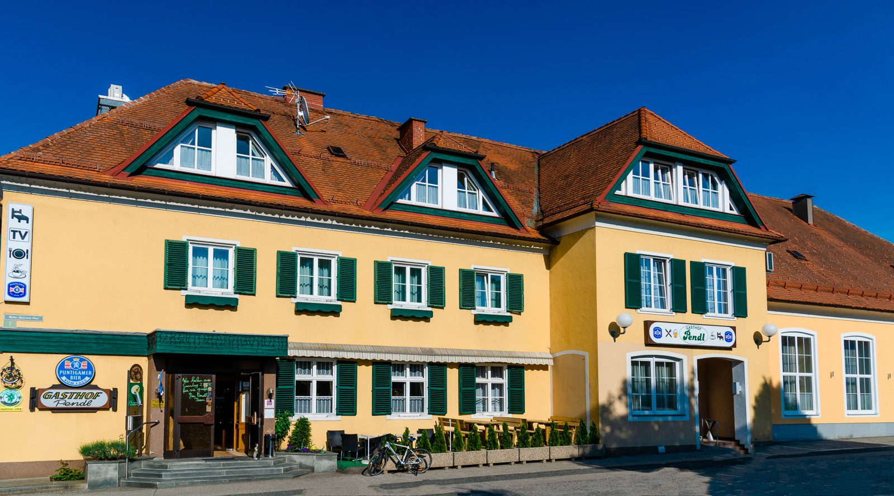

Adresse & Kontakt
Gasthof Pendl GmbH
Walther-Kamschal-Platz 7
8401 Kalsdorf bei Graz
Steiermark, Österreich
Tel. +43 3135 52 308
Fax +43 3135 55 900
office@hotel-pendl.at
Kontakt
Im Herzen von Kalsdorf bei Graz, im Bezirk Graz-Umgebung. Wir freuen uns auf Ihren Anruf, Ihre Nachricht und Ihren Besuch.
Gasthof Pendl GmbH
Walther-Kamschal-Platz 7
8401 Kalsdorf bei Graz
Steiermark, Österreich
Tel. +43 3135 52 308
Fax +43 3135 55 900
office@hotel-pendl.at
| Montag | 17:00 – 22:00 Uhr |
|---|---|
| Dienstag bis Samstag | 09:00 – 22:00 Uhr |
| Sonn- und Feiertage | geschlossen |
Der Gasthof liegt direkt am Walther-Kamschal-Platz im Ortszentrum von Kalsdorf, südlich von Graz.
Wir binden bewusst keine externe Karte ein – so braucht diese Seite kein Cookie-Banner.

Firmendaten
Nachricht
Für alles, was in kein Formular passt: Fragen zum Menüplan, zu Terminen, zu Gruppen oder zu Ihrem Aufenthalt.
Für konkrete Reservierungen nutzen Sie bitte die Anfrage-Seite – dort ist alles vorbereitet.